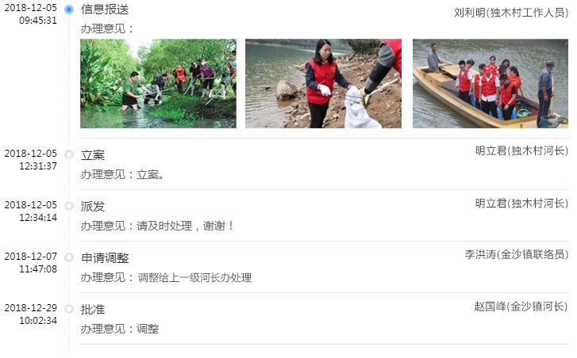

综合展示
信息管理
巡河管理
事件管理
抽查督导
考核评估
统计分析
河道视频
赵晓波
管理员
设置
退出
辉发河河长制
综合信息管理平台
巡河监察
手机端巡河
巡河监察
全屏详情
案卷总数 11
新立案 1
已派遣 1
处理中 7
待复核 1
已结案 1
案卷列表
上游有悬浮物
路牌损坏
中段河水污染严重
非法开垦农田
排污指标超标
非法采砂
居民倾倒生活废物
水生物泛滥
河道生态系统不平衡
水质不达标
×
历史流转记录
